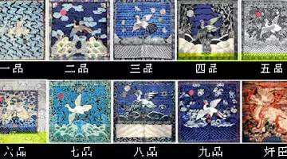

为何古代皇帝自称“朕”？皇后都自称“哀家”？
 283
283
1、中国古代的皇后为什么都自称“哀家”？
哀家一词应该是太后用的，而且是皇帝已死情况下，其皇后也就是后来的皇太后用的，意思是未亡人，哀痛先皇。
皇后自称哀家应该是个笑话，否则岂不是诅咒皇帝?那可是死罪。
“哀”隐含先帝去世之意，称“哀家”的只能是太后、太妃，电视里的玩意儿不能够当真的。
2、皇帝称谓的由来
历史上把君主称为“皇帝”，是从秦始皇开始的。
在此之前，中国的最高统治者称“王”或单称“皇”和“帝”，如周文王、周武王、“三皇”、“五帝”等。
春秋战国时期，周王室衰微，诸侯争霸，一些国力强大的诸侯国的国君也自称为王，如秦王、楚王、齐王、赵王、燕王等。
公元前221年，秦王赢政灭掉六国，平定天下。
赢政自认为这是亘古未有的功业，甚至连三皇五帝也比不上他，如果不改变“王”的称号，“无以称成功，传后世”，于是让李斯等人研究一下怎么才能改变自己的称号，以显示自己的“丰功伟绩”。
李斯等人商议后报告秦王说，上古有天皇、地皇、泰皇，泰皇最贵，可改“王”为“泰皇”。
秦王反复考虑，认为自己“德高三皇，功过五帝”，决定兼采“帝”号，称为“皇帝”，以显示自己的尊贵。
另一种说法：
秦灭六国后，秦王政觉得自己的功绩超过三皇五帝，如果不改名号，显不出他的伟大，更不能让后代明白他的豊高德厚，於是他招集了李斯和博士们商议改帝号之事。
丞相王绾禀奏：“三皇五帝的名称，是天下共主，实际上本身所占有的领土，不过方圆千里，而自商周称王后，才真正拥有天下，而且周维持了八百年的朝代，所以臣认为王的称号最好。”
秦王政不悦的说：“我不要商朝七百年或周朝八百年的天下，而是要万世永传的朝代。”
李斯上奏道：“陛下平定天下，如今海内都已成为郡县，法令由中央统一，这是自古以来从未有的事，所以陛下的功业为三皇五帝所不及。臣认为古有天皇、地皇、泰皇，而泰皇最尊贵，臣建议称泰皇。”
秦王政一听，高兴的说：“泰皇仍与以前分别不出来，我看，去「泰」留「皇」，采上古「帝」号，称「皇帝」。我称始皇帝，后世以数计，二世、三世、直至万世，传之无穷。另追尊庄襄王为太上。”
就这样，赢政被称为“秦始皇帝”，通称“秦始皇”。
3、皇帝为何自称“朕”？
在秦始皇以前，朕只是一个普通的字，谁都可以用的，并非国君专有。
此前国君专有的是孤和寡人，意思是寡德之人，谦称。
自秦始皇开始，只有皇帝才可以用朕。
孤归了王爷以下的贵族，例如侯爵，孙权致书曹操，“足下不死，孤不得安”，当时他只是吴侯。寡人就没人用了，反正也不需要再谦虚了。
4、皇帝为何自称“寡人”？
寡人，寡德之人。
这个词的用法比“孤”复杂些。古代王侯可自谦为寡人，《左传》：“请子奉之以主社稷，寡人虽死亦无悔焉。”
《廉颇蔺相如列传》：“秦王以十五城请易寡人之璧，可予不?”《邹忌讽齐王纳谏》：“王曰：‘善。’乃下令：‘群臣吏民能面刺寡人之过者，受上赏。’”
古代士大夫也有自称为“寡人”的。
《世说新语》：“晋王衍诸婿大会，郭家与衍婿裴遐谈，衍谓诸人曰：‘君辈勿为尔，将受困寡人女婿。’”
古代诸侯夫人也有自称寡人的，《诗?邶风》：“先君之恩，以勖寡人。”
这是卫庄公夫人庄姜自称。唐以后唯皇帝得称寡人。
5、“陛下”的由来
人们在文艺作品中，经常会看到臣民把皇帝称为“陛下”的情况。
为什么把皇帝称为“陛下”呢?
“陛下”是封建时代臣民对皇帝的称谓。
“陛下”本来是指宫殿的台阶，又特指皇帝座前的台阶。
皇帝临朝时，“陛”的两侧要有近臣执兵刃站列，以防不测和显示威风。
群臣常常不能直接对皇帝说话，而要由站在“陛下”的侍卫者转达，以示皇权的崇高。
“陛下”这一称呼最早见于司马迁的《史记》。
《史记·秦始皇本纪》中有这样的记载：“今陛下兴义兵，诛残贼，平定天下，海内为郡县，法令由一统，自上古以来未尝有，五帝所不及。”
后来，人们就用“陛下”作为对皇帝的直接称呼，表示自己虽然是在对皇帝说话，但在礼仪上不敢忘记自己本来无此资格。
6、“太上皇”的由来
秦朝末年，楚汉争霸，汉高祖刘邦最终取得了胜利。
汉王五年(公元前202年)十二月，项羽被刘邦十面埋伏，围于垓下(今安徽灵璧县东南)。
项羽突围不成，自刎于乌江(今安徽和县东北的乌江浦)。汉高祖刘邦当上皇帝后，每天都去参拜自己的老父亲。
谁知有一天当他又去参拜父亲刘太公时，却见父亲穿着一件旧袄，手拿扫帚，毕恭毕敬地迎接他。
刘邦大吃一惊，急忙上前搀扶父亲，而刘太公却连连后退。
刘太公说：“您贵为天子，谁敢不敬?我虽然是您的父亲，也只是一个平头百姓，平头百姓不敬皇帝，是要被杀头的。我也不想为这事坏了天下的法纪。”
汉高祖犯了愁，对于怎样才能不失礼度地对待自己的父亲，他一直想不出个好办法。
后来，有个大臣说秦始皇曾尊去世的父亲为太上皇，建议封刘太公为“太上皇”。
刘邦听了这话大喜过望，马上举行大典，将刘太公扶上太上皇位。皇帝的父亲从此就被称为“太上皇”，这一叫法历代沿袭下来。
7、鲁智深为何自称“洒家”?
《辞海》修订本说：“洒”是“宋元时关西方言‘洒家’的略语，犹咱”。
“宋元时关西一带人自称为‘洒家’。”
《辞源》修订本则说：“洒”,,音zá,,与“咱”“喒”同，“洒家”即“咱家”。
这在一定程度上是受了陆澹安的影响，陆著《小说词语汇释》说：“关西人自称为‘洒家’。‘洒’即‘咱’之转音。”

8、古代官服颜色的由来
我国古代官服的颜色从唐朝开始就已经有了区别：三品以上为紫袍，佩金鱼袋;五品以上为绯袍，佩银龟袋;六品以下为绿袍，佩五鱼袋。
如果官吏职务高而品级低，仍按照品级服色。如任宰相而不到三品的，其官衔中必带“赐紫金鱼袋”的字样;
州的长官刺史，则不拘品级，都穿绯袍。清代官服原则上都是蓝色，只在庆典时可用绛色;外褂在平时都是红青色，素服时改用黑色。
清朝的官服上绣有各种鸟兽图案，代表了官阶的高低。
文官官服上绣鸟类：一品绣鹤，二品绣锦鸡，三品绣孔雀，四品绣雁，五品绣白鹇，六品绣鹭鸶，七品绣鸿鹄，八品绣鹌鹑，九品绣练鹊。
武官官服上绣兽类：一品绣麒麟，二品绣狮，三品绣豹，四品绣虎，五品绣熊，六品绣彪，七品和八品绣犀牛，九品绣海马。
来源：上下五千年